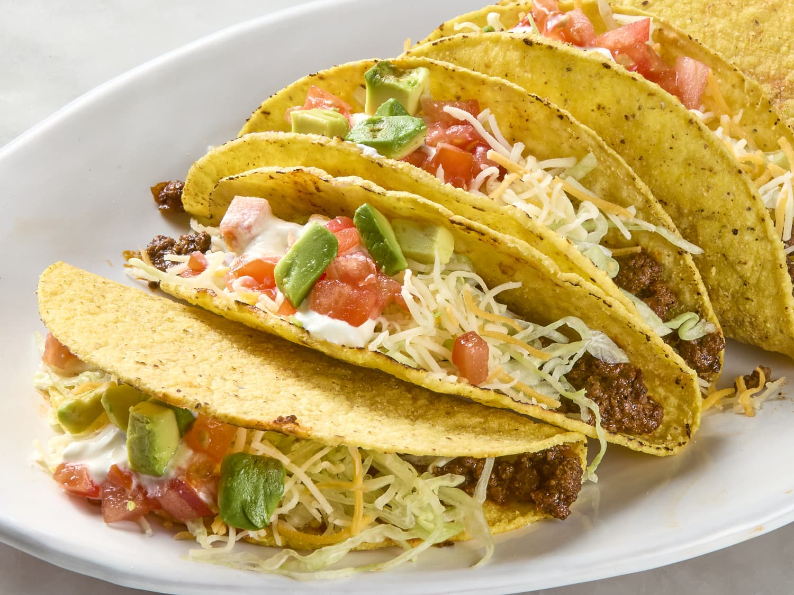

Back To Home
Tacos

Delicious tacos
These beef tacos are the perfect combination of savory and spicy. Seasoned ground beef is served in soft tortillas and topped with fresh ingredients like lettuce, cheese, and salsa. A quick and delicious meal for any occasion!
ingredients
- Ground beef (1 lb or 450g)
- Taco seasoning (either store-bought or homemade)
- Taco shells (hard or soft tortillas)
- Lettuce (shredded)
- Cheddar cheese (shredded)
- tomatos(diced)
- Sour cream (Optional)
- Salsa (optional)
- Guacamole (optional)
- Onions (diced, optional)
- Cilantro (optional)
- Lime (for squeezing)
Steps
- Wash and dice the vegetables like lettuce, tomatoes, onions, and cilantro. Grate the cheese and set all toppings aside in separate bowls for easy assembly later.
- Heat a large skillet over medium heat. Add the ground beef and cook until browned, breaking it into small pieces with a spatula or wooden spoon.
- Drain any excess fat from the skillet. Stir in taco seasoning and a small amount of water (about 1/4 cup). Let the beef simmer for 5-10 minutes until the seasoning is fully absorbed.
- For soft tortillas, warm them in a dry skillet for about 20-30 seconds per side or wrap them in foil and heat in the oven at 350°F (175°C) for 5 minutes. For hard shells, place them in the oven to crisp up for about 5 minutes.
- Take a tortilla or taco shell and spoon a layer of seasoned beef into the center. Add your favorite toppings such as shredded lettuce, diced tomatoes, cheese, and onions.
- Finish with a dollop of sour cream, salsa, or guacamole. Squeeze a wedge of lime over the top for extra flavor.
- Serve the tacos immediately and enjoy your delicious beef tacos with friends or family!